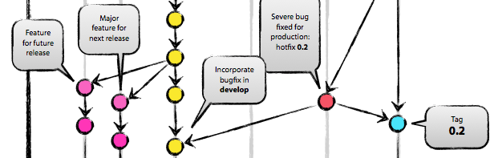
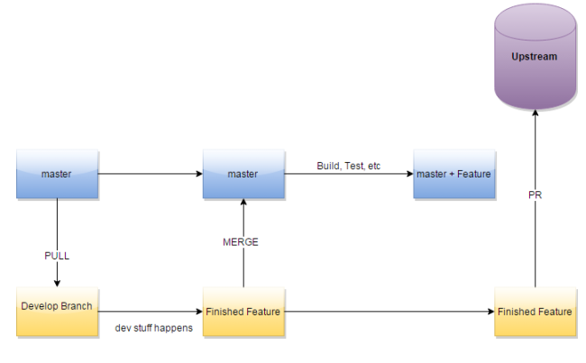

The Gitflow Problem
(7/28/15)
by Kirt Gittens
Code dependency hell is a dark place, strewn with the fragmented past of your old code and closed PR's. It's the nigtmare that version control attempts to shield us from, but ultimately the place we all end up during some point in the release cycle. How do you develop related software features in such a way that keeps them isolated and independent, so that they can all be seperately reviewed and merged into a central upstream repository? This is the problem of your software team's git flow.
For a while, we had a solution that seemed like it worked. Which was ultimately: don't. We waited for everyone to be finished with development until opening one massive PR to the upstream repository that took most of the week to review and merge appropriately, and in the meantime, any bugfixes that needed to go in, sat around in various states of readiness until the upstream was in. We had one master branch, and merged all of the code there, and from there we made the PR's. Anything that needed to go into our local repository or server, had to wait until upstream was clear.
This was ultimately unsustainable. The upstream PR's became bloated and difficult to even understand (try asking someone to review 700+ lines of code at one time, they'll probably laugh at you and then never speak to you again), but aside from that, this put a full stop on development while the PR was open. Having a local repository shoud mean you have the ability to leverage continous integration in an environment you, as the developer, can control. Without it, it's difficult to safely move forward with development.
*slams on table*
So, There has to be a better way
Simple solution! Create an upstream branch. We started merging all of our development branches into one master development branch, and then from there, some automated jobs got run in order to check tests and validate the work, and then it can go into the upstream branch. Development was able continue on the local repository, without affecting the upstream PR's that need to be open.
Except that they still ended up being gigantic because we created an artificial code cutoff for what goes into upstream. All of the work that's going up still needs to be in one place at one time (bye bye continuous delivery). We needed to use git and github in such a way that complements the agile development practices. We needed to be able to rapidly deliver small pieces of work.
*slams on table*
So, There has to be a better way
I'll be honest, when I first heard about using git this way, my brain was doing everything in it's power to convince me why it was a terrible idea. But I was incredibly wrong. It's not.

Never make PR's from a central location, you need to be able to deliver code whenever it's ready. The system is simple. Work on the development branch, and merge into the local repository, then build it, test it, do the magic that needs to be done. and the re open a PR, directly from devlopment branches to the upstream repository. This allows small, isolated pieces of code to move foward, without causing issues for any other unrelated development tasks. This method runs in to issues if the pieces of work you have are not truly either small or isolated, but the pressure from that issue can be mitigated outside of source control.
This method seems to work for us, but ultimately there's an infinite number of ways to use git, and some of those are heavily dependent on the situation. (Although, if you're dutch, please inform me of the best git flow? thanks.) Regardless of that, I think your source control methods need to fit the way in which you want to deliver software.
~ishygddt